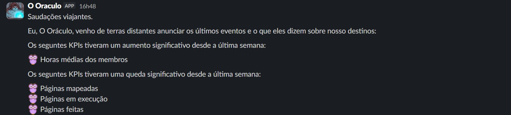
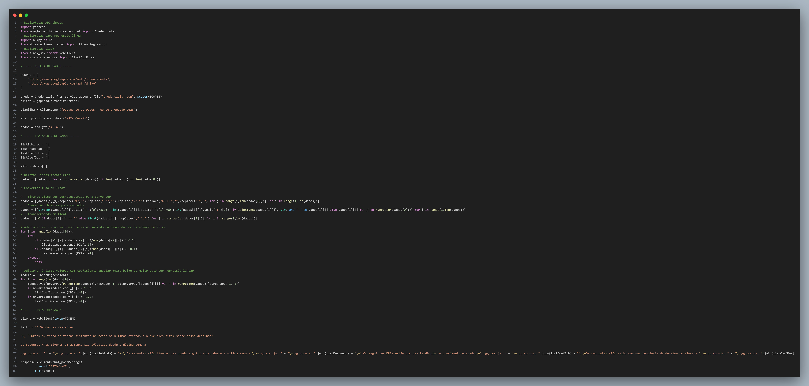

Coleta e Monitoramento de KPIs da Empresa
Problema / motivação
Enquanto liderança da empresa, na época em que fui diretor de Gente & Gestão da ENETEC, eu tinha que lidar com as áreas de gestão de pessoas, financeiros e administrativas, áreas bem distintas entre si e com dados bem dispersos na época, o que tornava o monitoramento extremamente desgastante e em alguns momentos quase impossível.
Processo
Frente a esse problema, me empenhar ao desenvolvimento de uma planilha que reunisse todos os dados relevantes da minha diretoria e semanalmente coletasse de forma automática pelo apps script, além disso, desenvolvi um bot que, também semanalmente, enviasse um pequeno relatório sobre os KPIs no slack.
Resultado
Embora não tenha conseguido colher os frutos diretos de trabalho por já estar no final da minha gestão, pude ver o quanto meus esforços auxiliaram no trabalho da diretora seguinte, permitindo a ela uma visão bem mais centradas dos problemas e focos da diretoria.

Farol Mensal
Farol MensalStack
- ESP32
- C++ / Arduino
- TP4056
- LDO (HT7333/ME6211)